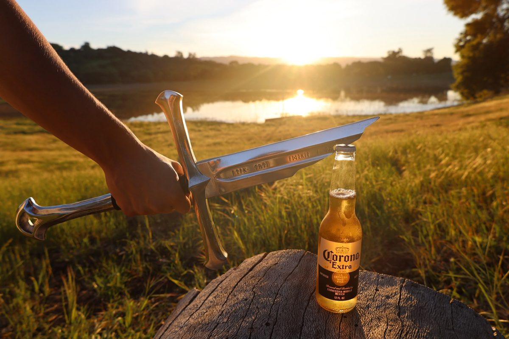
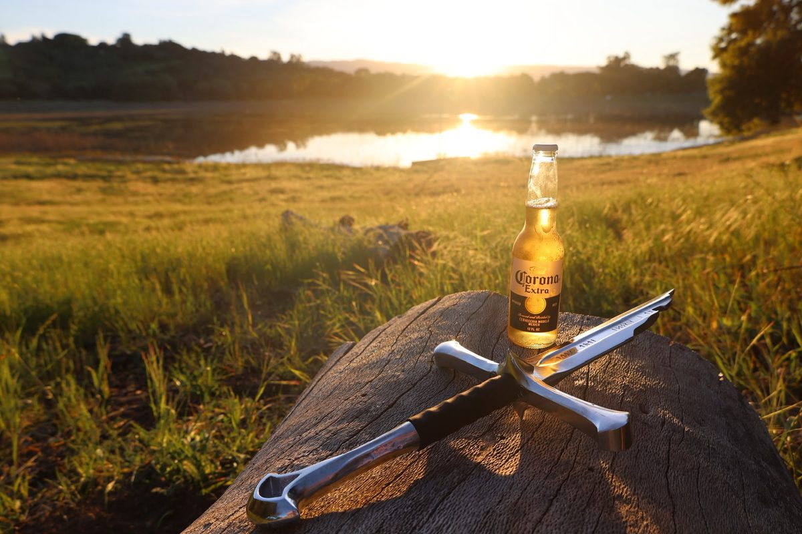
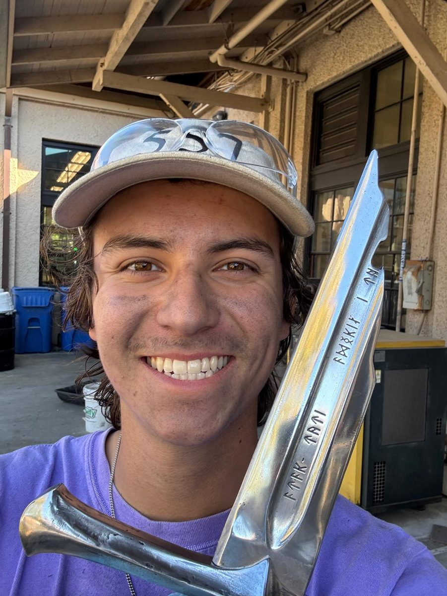

Project 01
Narsil: cast aluminum bottle opener
The problem. Design and manufacture a functional cast aluminum piece end to end, alone, in ten weeks. The hard constraint was the engraving: raised lettering only reproduces in sand casting if the draft angles and pattern geometry are right, and there is no second pour to fix it. I also had no pattern board, so the two halves of the mold had to register themselves.
What I did. Sole designer. Iterated the model in Fusion 360 through foam and machined plastic prototypes before committing geometry, then sand cast the blade, crossguard, and lower handle in aluminum, engineering draft so the engravings pulled clean in a single pour and using cast-in alignment features in place of a pattern board. Turned the 6061 handle on a manual lathe with a radius cutter and machined the mating and assembly features on the mill and drill press using custom soft jaws. When the hardware came in out of spec, I salvaged it in the shop by die-threading, cutting, and belt-sanding the oversized screws to fit rather than losing a week to reordering.
Result. Every cast feature reproduced on the first pour, and the cast surfaces were wet sanded and polished through progressive grits to a mirror finish.
- Tools
- Fusion 360, sand casting, manual lathe, mill, drill press
- Role
- Individual project, sole designer
- Course
- ME 103, Winter 2026